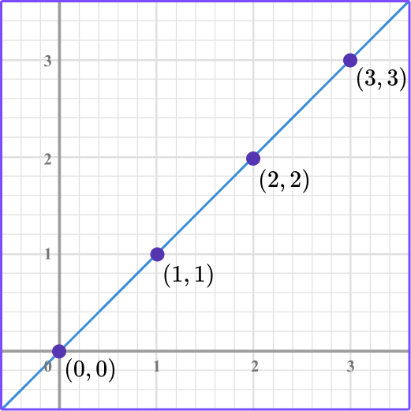
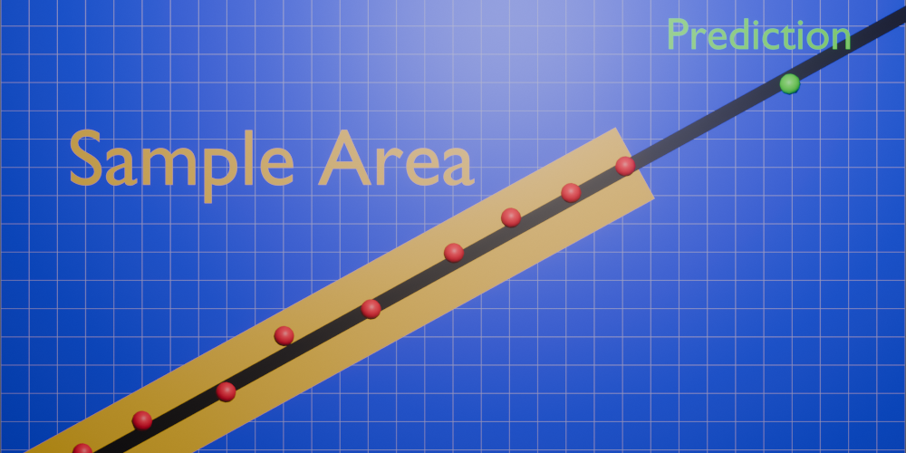

Question 1: Which ball will go faster when dropped?


Question 1: Which ball will go faster when dropped?
Incorrect: The Red Ball is higher up and the ramp is at a steeper slope.
Question 2: If an object is high up does it have kinetic energy or potential energy?
Incorrect: An object that is high up carries potential energy as it has the 'Potential' to transform that energy into kinetic energy, like if it were to fall.
Question 3: Which line applies to this data?
Incorrect: A graph that has a perfectly strait slope in the form of a strait line is proportional.
Question 4: True or false: When an object is moving it is transforming potential energy into kinetic energy.
Incorrect: An object that is in motion transformes its potential energy into kinetic energy, like if a ball was rolling down a slope, the closer to the ground the ball gets the less potentail energy it has due to gravity.
Question 5: What confidence is this equation?
Incorrect: To gauge the confedence you should have in an equation look at how far the predicted point is from the sample data and how many data points the line of best fit runs through.
You have reached the end of the test, I hope this helped you study!